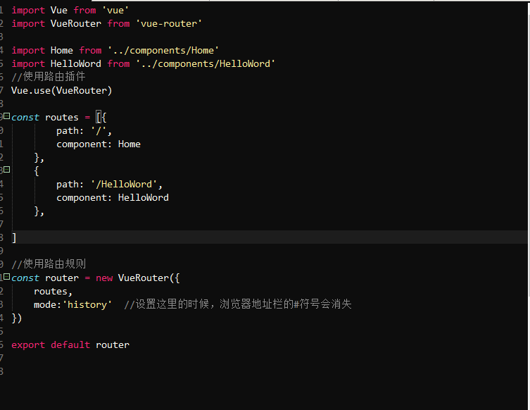
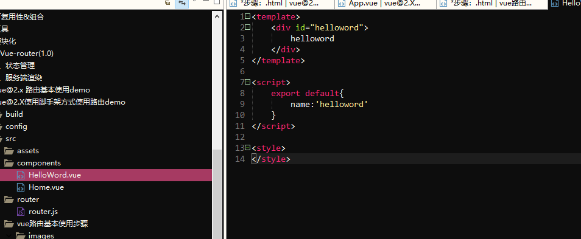
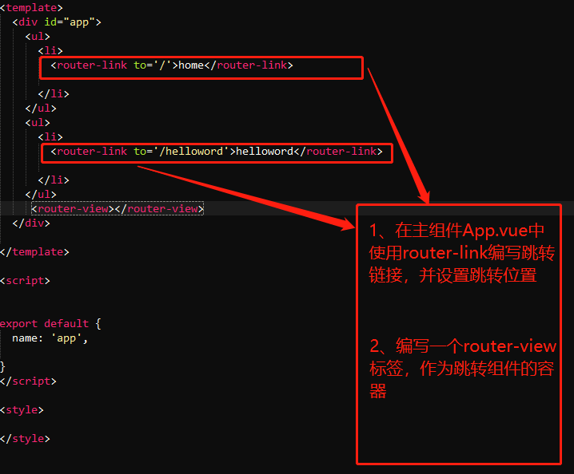
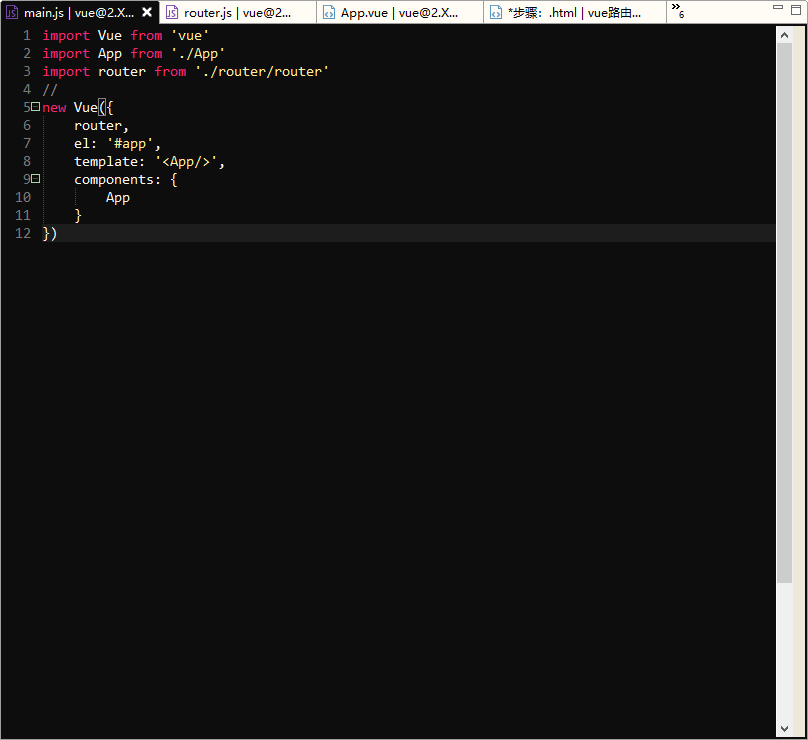

第一步：编写，路由文件。
1、新建一个js文件可以命名为router，
2、在新建的router.js中引入vue:
import Vue from 'vue'
3、引入 vue-router:
import VueRouter from "vue-router"
4、使用vue-router:
Vue.use(VueRouter)
5、实例化vue-router对象 使用路由规则:
1） 引入跳转组件
import Home from '../components/Home'
import HelloWord from '../components/HelloWord'
引入组件写在使用组件的语句之前，否则报错，一般写在顶部引入router后面
2） 配置路由
const routes = [
{path: '/',component: Home },
{path: '/HelloWord',component: HelloWord},
3）实例化路由： ]
const router = new VueRouter({
routes,
mode:'history' //设置这里的时候，浏览器地址栏的#符号会消失
})
6、导出路由模块：
export default router
步骤截图：

第二步：编写组件：
1、编写普通组件:
普通组件就按照需求编写

2、编写主组件App.vue：
在App.vue文件中

第二步：编写main.js
1、引入vue:
import Vue from 'vue'
2、引入路由js文件：
import router from './router/router'
3、实例化vue:
new Vue({
router, //将路由注册到根组件
el: '#app', //挂载组件
template: '', //使用模板
components: { //注册App组件
App
}
})
步骤截图：
